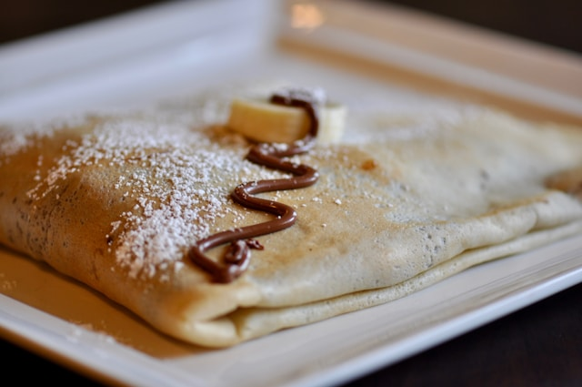

Crepe Recipe
Description
Crepe is one of the most loved recipes among food and breakfast recipes, along with pancake recipe.
That's why those who are new to the kitchen and want to prepare practical flavors for breakfast are curious about crepe recipe, tricks of the trade; they want to prepare crepe dough and crepe ingredients and make their loved ones happy with breakfast crepe.
In its most basic form, crepe, which is obtained by mixing ingredients such as eggs, milk, flour and cooking in a pan, also draws attention with its ease of preparation.
Ingredients
- 2 eggs
- 1 cup milk
- 1 cup water
- 1 tablespoon oil
- 6 heaping tablespoons flour (1 cup)
- 1 teaspoon salt
Directions
- For the crepe recipe, first take 1 glass of milk in a bowl. Using milk here will increase the flavor of the crepe.
- Add 1 glass of water to it.
- Add 1 tablespoon of oil, 2 eggs and 1 teaspoon of salt. Beat well to make it soft.
- Add 6 tablespoons of flour and mix well with a whisk. Then beat until it reaches a smooth consistency and let it rest for 5 minutes to find its consistency.
- Pour the crepe dough you have prepared into the pan with a ladle.
- Shake it lightly to spread the dough thinly on the bottom. Fry on medium heat until it becomes bushy and takes color.
- Repeat the same process by greasing the teflon pan from time to time until the crepe dough is finished. This step is necessary to cook all the dough nicely and to prevent the crepes from sticking to the pan.
- The crepe recipe is ready! Place the cooked crepes on a serving plate. Share the crepes with your loved ones without cooling them. Enjoy your meal!
Home